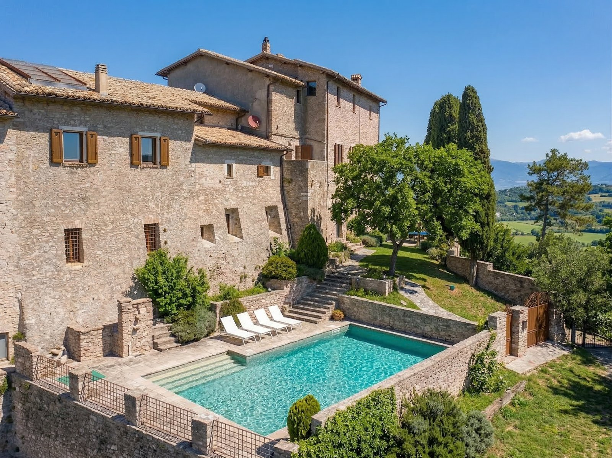

€1.100.000
Macerino, Umbria, Italy
Open the listingImposing 16th-century Palazzo Massarucci (Castello di Macerino) carefully renovated into a private residence with regal lounges and a splendid garden pool — deep historic Umbrian character with built private pool under €1.2M.
Opened 12 Sep 2026 via E&V expose 98b1eaf8…; hasSwimmingPool=True; village-palazzo setting (not countryside farmhouse) but strong old-meets-new character; schema beds/baths 7/5 (marketing text says nine bedrooms/six baths); plot/garden ~600 m².